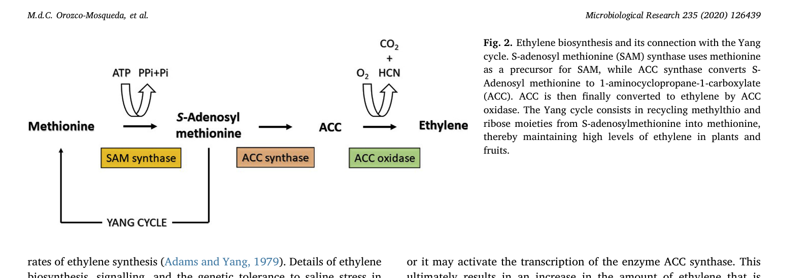
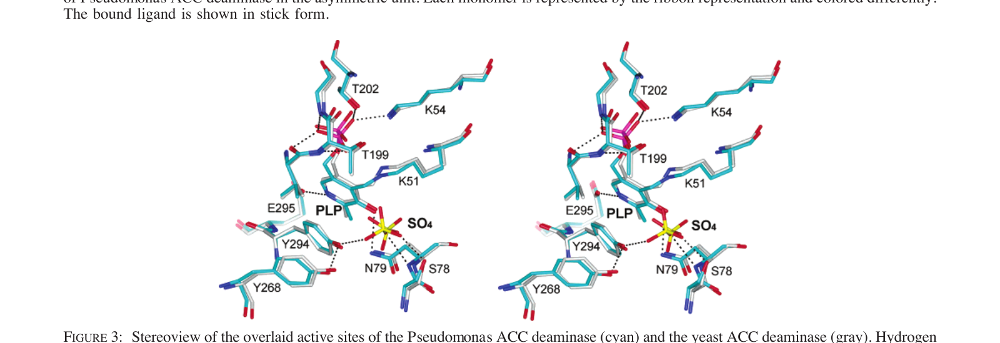

Introduction
ACC deaminase (AcdS, EC 3.5.99.7) is a pyridoxal-5′-phosphate (PLP)-dependent enzyme that hydrolyses 1-aminocyclopropane-1-carboxylate (ACC) — the immediate precursor of the plant hormone ethylene — into α-ketobutyrate and ammonia. By depleting the ACC pool available to plants under abiotic or biotic stress, ACC-deaminase-producing rhizobacteria suppress the damaging "stress-ethylene" peak and enable plants to grow under salinity, drought, flooding, heavy-metal contamination, and pathogen pressure.
This knowledgebase consolidates structural, mechanistic, mutagenetic, and agronomic data from the primary literature into an interactive reference, with Pseudomonas sp. UW4 (UniProt Q5PWZ8, 338 aa) as the canonical sequence.
The big picture


At a glance
Browse
Sequence
Interactive 338-residue map of AcdS with active sites, PLP attachment, substrate gate, and all known mutagenesis sites annotated.
Structure
Crystal structures (PDB 1TYZ, 1TZ2, 1TZM, 1TZJ, 1TZK, 1J0C, 1J0D, 1J0E), fold-type II PLP architecture, trimeric assembly, active-site geometry.
Mechanism
PLP chemistry of cyclopropane-ring opening: internal aldimine → gem-diamine → external aldimine → quinonoid → aminocrotonate → α-ketobutyrate + NH₄⁺.
Mutants
Comprehensive table of every published AcdS mutation (G44D, K51T, S78A, Y268F, Y294F, E295D/S, L322T…) with kinetics and phenotypes.
Agriculture
PGPB applications: salt tolerance, drought, metal phytoremediation, flooding, flower senescence, nodulation efficiency. Crops, strains, % yield gains.
References
Annotated bibliography of the 12 primary papers underpinning this resource.
Scope & sources
Built from 12 primary papers spanning 1978 → 2023, covering the enzyme's original discovery (Honma & Shimomura), molecular cloning (Sheehy 1991), kinetic and structural characterisation (Hontzeas 2004, Karthikeyan 2004, Ose 2003), mechanistic dissection (Thibodeaux & Liu 2011), specificity engineering (Todorovic & Glick 2008), fungal isoform analysis (Pramanik 2022), and agronomic application reviews (Glick 2014; Orozco-Mosqueda 2020; Shahid 2023).